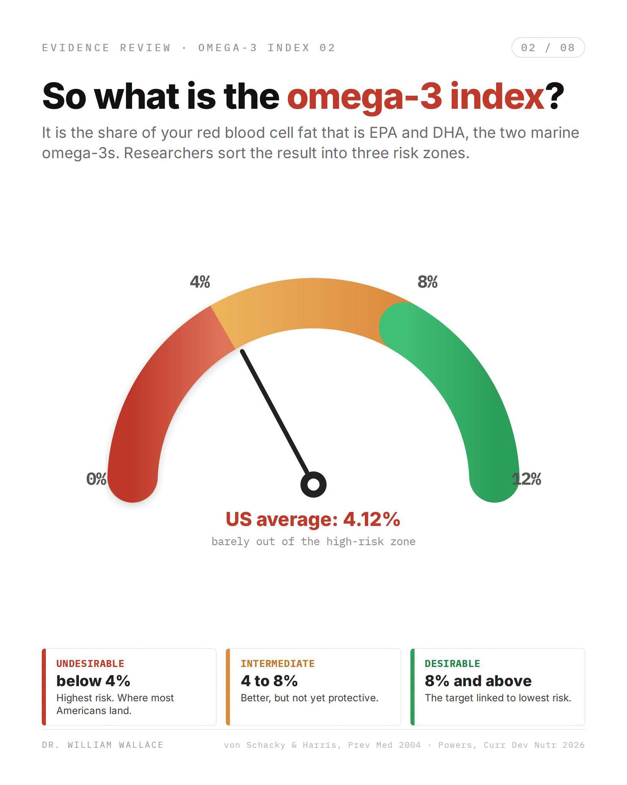
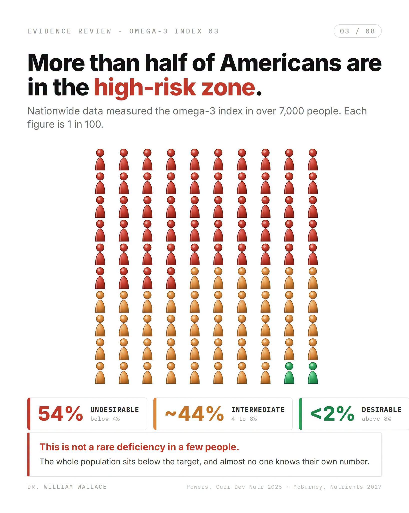
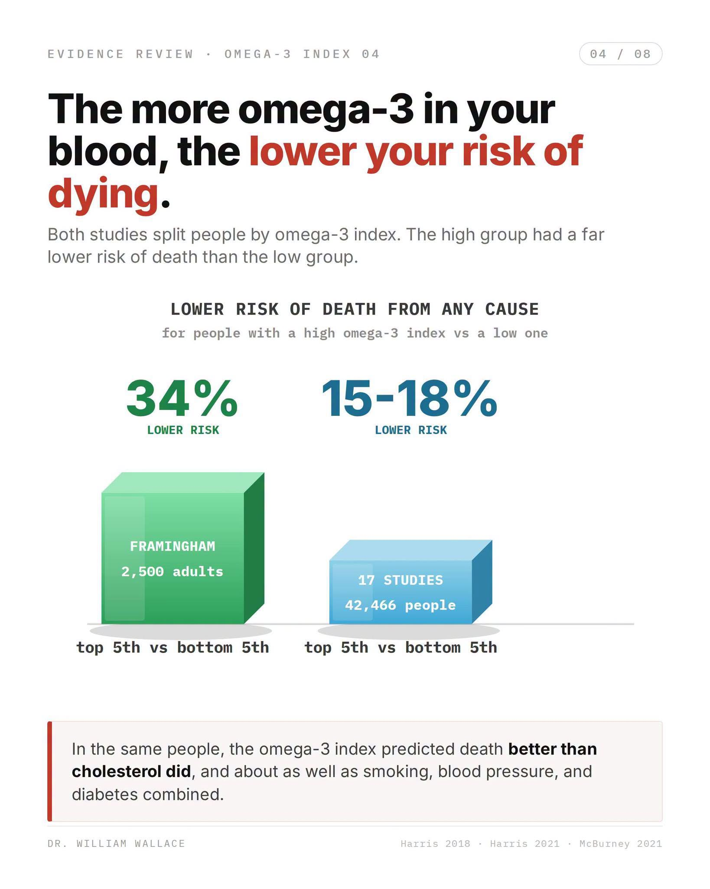
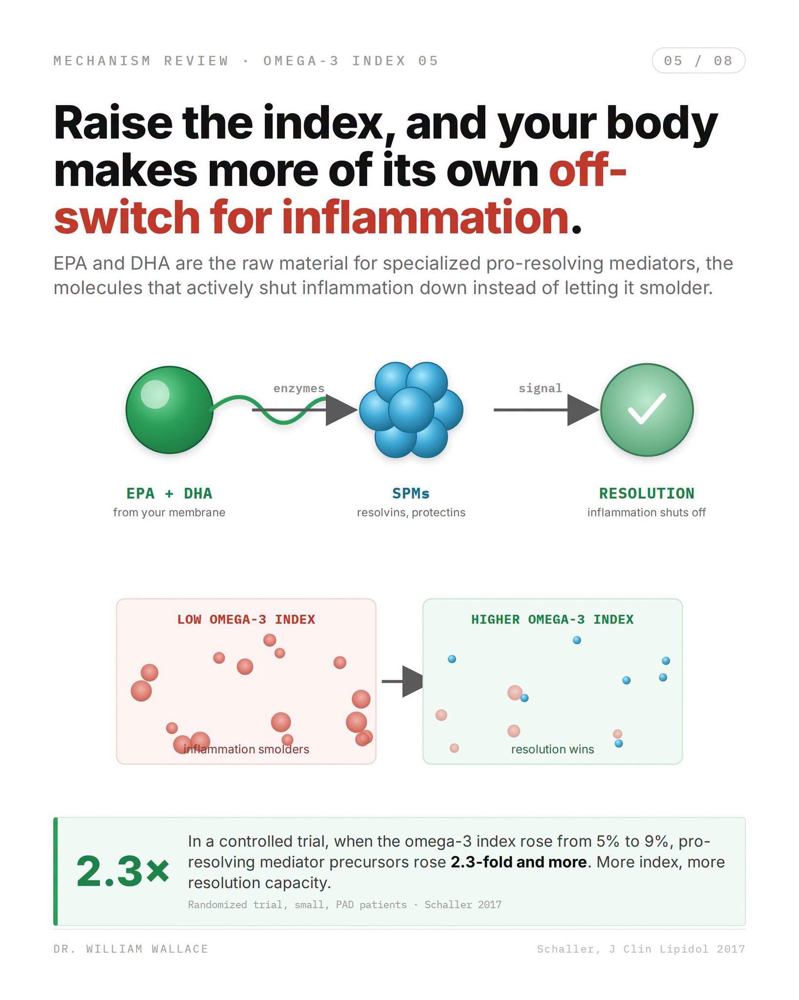

The research on the omega 3 index and mortality is most observational, but it is impressive nonetheless.
(Note that the downside of high omega 3 intake is that it appears to increase the risk of developing AFib.)
A shared summary says US average omega-3 index is 4.12% and under 2% of people reach 8%. In a 2,500-person cohort and 42,466-person pooled analysis, highest-index groups had lower all-cause mortality. Louis cautions evidence is observational and high omega-3 intake may raise AFib.
The research on the omega 3 index and mortality is most observational, but it is impressive nonetheless.
(Note that the downside of high omega 3 intake is that it appears to increase the risk of developing AFib.)
More than half of Americans sit in the highest-risk zone for a blood marker most people have never measured: the omega-3 index.
It's the share of your red blood cell membrane made up of EPA and DHA, the two marine omega-3s. Recent nationwide NHANES data put the US average at 4.12%, with fewer than 1 in 50 people reaching the desirable level of 8% or higher.
Across a 2,500-person cohort and a 42,466-person pooled analysis, people in the highest fifth for omega-3 index had a lower risk of dying from any cause than those in the lowest fifth. In the same Framingham data, the index predicted death better than cholesterol did, and about as well as smoking, blood pressure, and diabetes combined. These are associations, not proof that raising it saves your life, but the marker tracks mortality as tightly as risk factors doctors already act on.
The mechanism plausibly runs through inflammation:
EPA and DHA are the raw material for specialized pro-resolving mediators, the molecules that actively switch inflammation off. In one small trial, raising the index doubled those precursors.
The standard "two fish meals a week" advice gets you to 8% only about 1 in 10 times. And the dose to reach target depends entirely on where you start.
Starting near 4%, it takes roughly 2,000 mg/day of EPA+DHA. Starting near 6%, far less, closer to 1,100. Aim for the EPA+DHA total, not the fish-oil total.
The omega 3 index is cheap to measure, sits below target in most people, and is worth knowing (IMO).




First nationally representative Omega-3 Index data from NHANES show 54% of Americans below 4% and nearly 98% below the optimal 8%. Louis suggests this may raise CVD risk.
Louis shares a FoundMyFitness claim that people with a high omega-3 index (about 8%) have roughly 5 more years of life expectancy than those with a low index (about 4%) in cohort data from the Framingham Heart Study. It also says very low omega-3 may carry mortality risk similar to smoking and that nearly 90% of Americans fall short of EPA and DHA targets.
Louis shares a FoundMyFitness post claiming that a low omega-3 index carries mortality risk like smoking and that about 2 g/day of EPA plus DHA raises the index from 4% to 8%. He cautions that the research is primarily observational.
Louis shares a clip summarising observational Framingham Heart Study data on the omega-3 index and notes the research is mostly observational but compelling. The shared text claims a low omega-3 index carries mortality risk similar to smoking and that raising it to about 8% could add roughly five years of life expectancy.
Louis shares an OmegaQuant video arguing low omega-3 is a cardiovascular risk factor and that the omega-3 index may be a stronger predictor than cholesterol. The source is a company selling the test, and no numbers are given in the post.

Louis warns that the atrial fibrillation risk from high-dose omega-3 is real. A 2021 meta-analysis of 7 RCTs (81,210 people) found higher AF risk, and a 2026 meta-analysis of 35 RCTs (114,592 people) confirmed it at higher doses in people at high CVD risk, but not in those without high risk, and not at low doses in either group.